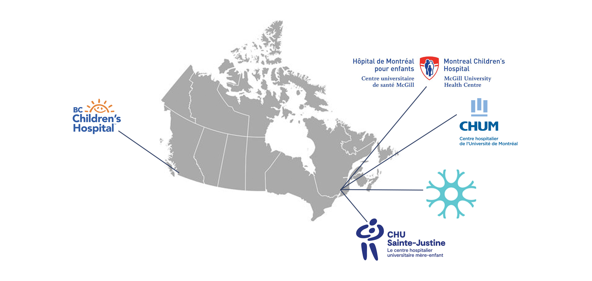
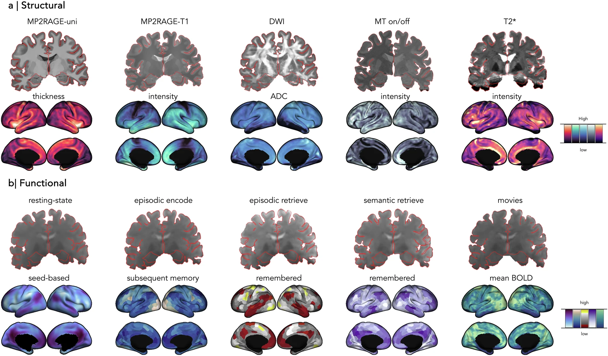
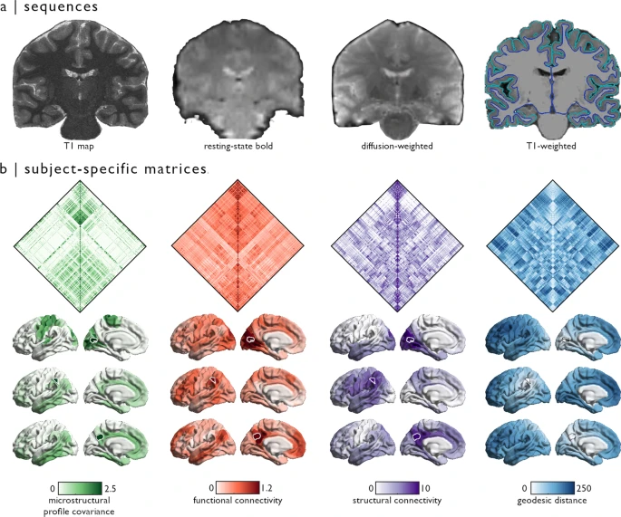
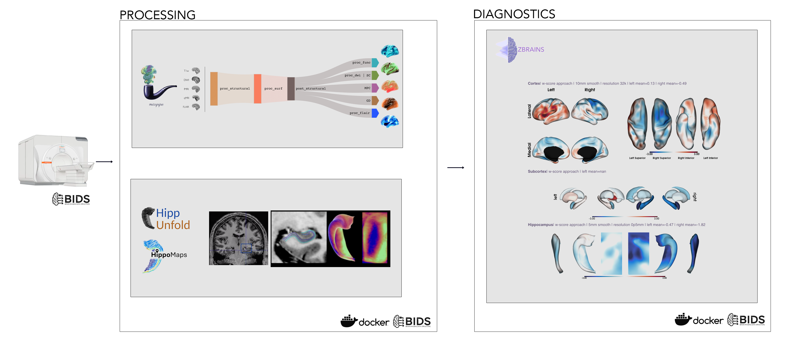
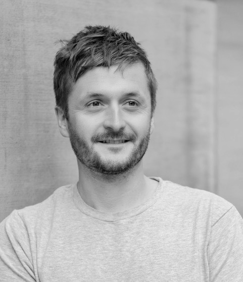

ABOUT
Early diagnosis and effective treatment of uncontrolled epilepsy are currently the most pressing clinical problems that entail distinct largely unresolved challenges along the course of the disorder.
To fill these gaps, we launched the Epilepsy Neuroimaging Data EXchange (ENDEX) as a one-of-its kind initiative to collect, aggregate, analyze and share neuroimaging data for the identification and validation of useful, robust, and non-invasive neuroimaging biomarkers of epilepsy.
Our project involves an ongoing collection of high definition neuroimaging (3T MRI, 7T MRI, and sometimes PET) data in patients with epilepsy, their family members as well as healthy controls together with the tracking of standardized clinical and cognitive phenotypes. Participants are followed longitudinally, both across the lifespan and their clinical course.
Participating sites adopt best practices in neuroimaging of epilepsy. In particular, we have adopted ILAE-HARNESS protocols for optimized structural imaging of epileptic patients and have furthermore incoproated cutting-edge multiband functional MRI and diffusion MRI sequences for connectome analysis and microstructural modelling.
Acquired data and derivatives are stored in standardized (BIDS) format, and data processing adopts several cutting edge open access workflows, in particular micapipe, hippunfold, and z-brains in containerized form.
Our project is being developed under an open science framework. Benchmak datasets in healthy individuals have already been released to the commuity in phase 1. In phase 2, we're sharing additionally processed derivatives from patients and controls with the broader neuroimaging and epilepsy research community, for transparent, reproducible, and maximally impactful research and biomarker discovery.
Our project is closely aligned with other large-scale 7T data aquisition initiatives, notably the Montreal Paris Neurobank and the Q1K project, to situate epilepsy related changes in the context of normative lifespan processes and the broader landscape of neurodevelopmental indications.
PROJECT
SITESIn its first phase, ENDEX is launched as a multisite initiative with the following partner sites: Montreal Neurological Institute and Hospital (The Neuro, main site) CHU St Justine Montreal (CHUSJ) CHU Montreal (CHUM) Montreal Childrens' Hospital (MCH) BC Childrens' Hospital (BCCH)  |
IMAGING DATAThe following contrasts are routinely acquired and processed in our participants: 3D Structural Imaging (T1w, FLAIR) based on ILAE-Harness recommdations previously published by our team (see this and this paper)) Myelin-sensitive 3D T1 relaxometry (for an application in epilepsy, see this) Multiband functional MRI (at rest and during memory and language tasks) Multiband diffusion MRI for tractography and microstructural modelling Arterial Spin Labeling for the mapping of tissue perfusion At the Neuro site, eligible participants furthermore undergo an additional 7T scan Benchmark datasets in healthy participants have been previously shared with the community. Please visit data and paper for the 7T release.  For the 3T release, please see data and paper here  |
IMAGE PROCESSINGAll imaging data are routinely processed with micapipe for multimodal processing and connectome generation, hippunfold for hippocampal mapping, and z-brains for normative modelling and participant specific deviation mapping.  |
TEAM
|  |
Boris Bernhardt, PhD Associate Professor of Neurology and Neurosurgery Canada Research Chair in Cognitive Neuroinformatics Montreal Neurological Institute and Hospital, McGill University email |
|
|
Dewi Schrader, MHSc, MBBS, FRCPC Associate Professor and Pediatric Neurologist BC Children's Hospital, UBC email |
||
|
Alexander Weil, MD , FRCSC , FACS Associate Professor and Pediatric Neurosurgeon Department of Surgery, University of Montreal email |
||
|
Roy Dudley, MD, FRCSC, FACS, PhD Associate Professor and Pediatric Neurosurgeon Montreal Children's Hospital, McGill University email |
||
|
Aristides Hadjinicolaou, MD, FRCSP Assistant Professor, Neurologist, Pediatric Epileptologist Montreal Children's Hospital, McGill University email |
||
|
Neda Bernasconi, MD, PhD Professor of Neurology and Neurosurgery Montreal Neurological Institute and Hospital, McGill University email |
||
|
Andrea Bernasconi, MD Professor of Neurology and Neurosurgery Montreal Neurological Institute and Hospital, McGill University email |
PARTICIPATE
|
Please get in touch here if you are interested in the study |
SPONSORS/FUNDERS
|
|
|
|
|